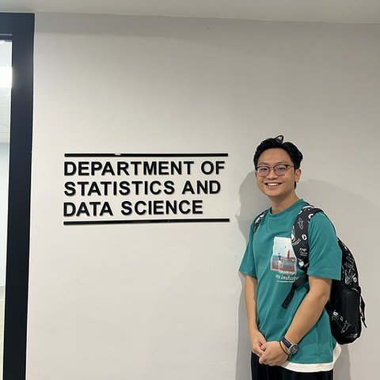

Hoang-Viet Nguyen
PhD student
Department of Statistics and Data Science
National University of Singapore

I am a PhD student at the National University of Singapore, advised by Prof. Alexandre H. Thiéry. I work on methods for sampling from unnormalized probability distributions, such as Boltzmann densities in molecular and statistical physics, by combining Monte Carlo methods with generative models such as diffusion models and normalizing flows. During my PhD, I have also had the privilege of working with Prof. Hai-Dang Dau (Nanyang Technological University).
I did my bachelor's and master's studies at Hanoi National University of Education (HNUE). During my bachelor's, I worked with Prof. Hoang Long Ngo and Prof. Duc Trong Luong on numerical approximation of stochastic differential equations. My master's thesis, on estimation for Ising-type models, was supervised by Prof. Van Hao Can (Vietnam Academy of Science and Technology). Alongside my master's, I worked for two years as a teaching assistant at HNUE.
Research interests
- Monte Carlo methods: sequential Monte Carlo, parallel tempering, importance sampling
- Diffusion-based samplers and normalizing flows
- Stochastic optimal control and nonequilibrium statistical mechanics
- Stochastic differential equations and their numerical approximation
Publications
-
Amortizing Tempered Sampling with Corrected Self-Training.
Hoang-Viet Nguyen, Hai-Dang Dau, Alexandre H. Thiéry.
arXiv preprint arXiv:2611.23072, 2026. -
A Multi-level Monte Carlo Simulation for Invariant Distribution of Markovian Switching Lévy-Driven SDEs with Super-Linearly Growth Coefficients.
Hoang-Viet Nguyen, Trung-Thuy Kieu, Duc-Trong Luong, Hoang-Long Ngo, Ngoc Khue Tran.
Methodology and Computing in Applied Probability, 27(4), 79, 2025.JournalBibTeX
@article{nguyen2025multilevel, title = {A Multi-level {Monte Carlo} Simulation for Invariant Distribution of {Markovian} Switching {L{\'e}vy}-Driven {SDEs} with Super-Linearly Growth Coefficients}, author = {Nguyen, Hoang-Viet and Kieu, Trung-Thuy and Luong, Duc-Trong and Ngo, Hoang-Long and Tran, Ngoc Khue}, journal = {Methodology and Computing in Applied Probability}, volume = {27}, number = {4}, pages = {79}, year = {2025}, doi = {10.1007/s11009-025-10205-2} }
Education
- PhD in Statistics and Data Science, National University of Singapore, 2025 – present. Advisor: Prof. Alexandre H. Thiéry. Collaborator: Prof. Hai-Dang Dau (NTU).
- Master in Probability and Statistics, Hanoi National University of Education, 2023 – 2025. Thesis on estimation for Ising-type models, supervised by Prof. Van Hao Can (VAST).
- Bachelor in Mathematics Education, Hanoi National University of Education, 2019 – 2023. Research on numerical approximation of stochastic differential equations with Prof. Hoang Long Ngo and Prof. Duc Trong Luong.
Working experience
- Teaching assistant, Hanoi National University of Education, 2023 – 2025.
Contact
Department of Statistics and Data Science
National University of Singapore
6 Science Drive 2, Singapore 117546
Email: h.v.nguyen [at] u.nus.edu